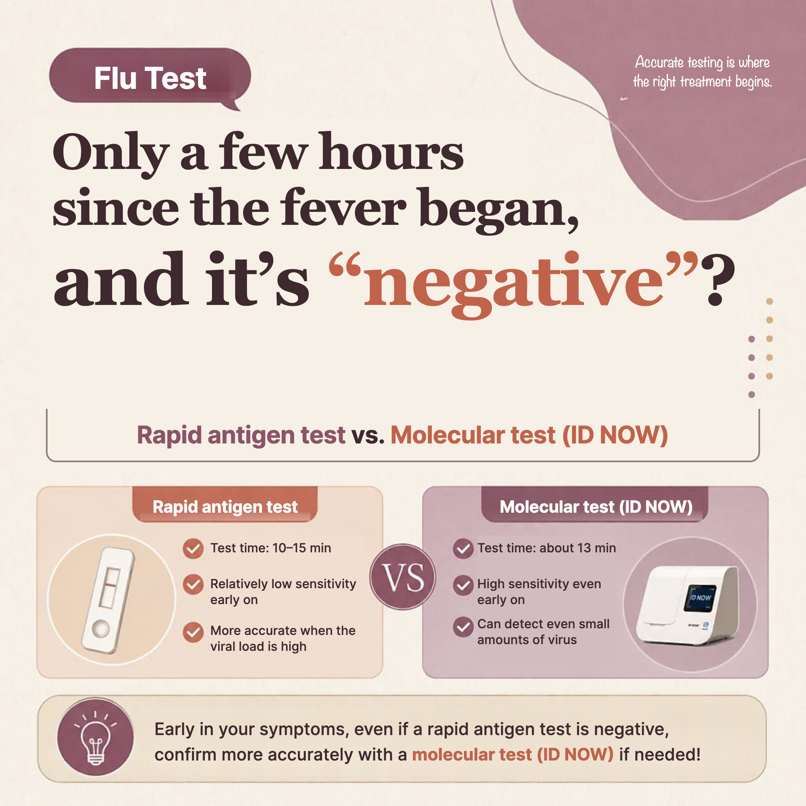
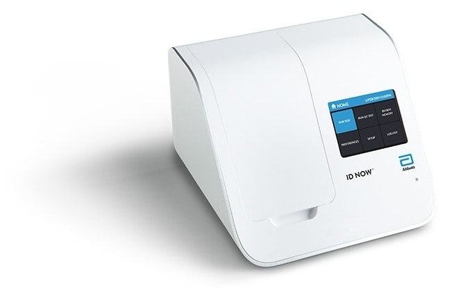

"The test was negative last night, but today they say it's the flu."
During flu season we hear this all the time: "My child suddenly had a fever at night. The test was negative, so we just gave fever medicine. Today we tested again and it's influenza A."
Was the first test wrong? Usually not. The rapid antigen test — the "flu kit" swabbed from inside the nose — is, by its nature, prone to missing flu in the first hours of fever.
Below I explain, with the research evidence, why flu tests can be negative early on, and how a molecular test (ID NOW) differs.
- Shortness of breath or fast breathing; pale or bluish lips or face
- Very drowsy and hard to wake, confused, or a seizure
- Hardly drinking, or passing much less urine (dehydration)
- Fever that settles and then comes back with worsening cough and phlegm (possible secondary bacterial infection)
- High fever in a baby under 6 months, a pregnant woman, someone 65 or older, or anyone with asthma, heart disease, diabetes or a weakened immune system
In this article 5 sections · 6 min read
What does a rapid antigen test detect?
The common "flu kit" is a rapid antigen detection test (RADT). A swab taken from deep in the nose (nasopharynx) is checked for viral protein fragments (antigens), with results in 10–15 minutes. It is fast and simple, but has one structural weakness: there has to be enough antigen to turn it positive.
Influenza virus multiplies rapidly in the nose over time after infection. Right after a fever starts, the amount of virus may still be low, so the kit may not react even though you really have flu — a false negative. Japanese researchers note that rapid antigen tests are affected by viral load and that sensitivity is reported to be lower within 12 hours of fever onset (Mitamura et al., 2020). And this is from Japan, where most people are tested within 2 days of onset and kit sensitivity tends to be reported higher than elsewhere.
In short: a positive kit result is fairly reliable for confirming flu, but an early negative result is not very reassuring.
How is a molecular test (ID NOW) different?

ID NOW looks for the virus's genetic material (RNA), not its proteins. A small in-clinic device amplifies and detects the genetic material in a short time using isothermal nucleic acid amplification (NEAR). In principle it belongs to the same "molecular diagnostics" family as hospital-lab PCR.
| Rapid antigen test (kit) | Molecular test (ID NOW) | |
|---|---|---|
| Detects | Viral protein (antigen) | Viral genetic material (RNA) |
| Method | Antigen–antibody reaction | Genetic amplification (molecular) |
| Time | About 10–15 minutes | Up to 13 minutes (positives may show sooner; manufacturer data) |
| When viral load is low | Easily missed | Small amounts can be detected |
| Sample | Nasopharyngeal swab | Nasopharyngeal or nasal swab |
So the time and swab are almost the same as a kit, but it can pick up smaller amounts of virus. That makes the difference when it comes to deciding at the first visit.
The evidence: over 90% detection even early in the fever
A multicenter study led by Mitamura's team at Eiju General Hospital in Tokyo, with pediatric and internal medicine clinics across Japan, tested nasopharyngeal samples from 373 children and 152 adults with flu-like symptoms using ID NOW, viral culture, rapid antigen tests and LAMP, with laboratory rRT-PCR as the reference (J Infect Chemother, 2020).
- ID NOW sensitivity: 95.9% for influenza A, 100% for influenza B (nasopharyngeal swabs)
- Specificity: 100% for both A and B (no false positives in this study)
| Time since fever began | Influenza A | Influenza B |
|---|---|---|
| 0–6 hours | Above 90% | Above 95% |
| Later time points | High 90s to 100% | High 90s to 100% |
In this Japanese study, the 0–6-hour analysis combined nasopharyngeal swabs and aspirates. ID NOW sensitivity was reported as above 90% for influenza A and above 95% for influenza B. These are study-specific estimates, not a guarantee for every patient; the early influenza A difference from the antigen test was not statistically significant. The study was sponsored by Alere Medical.
The same team's follow-up study in adults (2021, covering four seasons from 2016/17 to 2019/20) compared the two tests directly. It reported that within 12 hours of onset, when viral load is low, rapid antigen sensitivity drops in particular, while ID NOW stays high — so the gap between the two widens. ID NOW specificity was 98% or higher in all groups.
| Sensitivity | ID NOW | Rapid antigen test |
|---|---|---|
| Influenza A | 97.3% | 80% |
| Influenza B | 100% | 73.3% |
| Overall | 97.8% | 78.9% |
Roughly speaking, out of 100 people with flu in that study, the kit missed about 21 and ID NOW missed about 2.
Why does deciding at the first visit matter?
- Antiviral treatment is time-sensitive. Antivirals work best when started early, ideally within 48 hours. If flu is suspected in a high-risk patient, or illness is severe, progressive or requires hospitalization, treatment should start promptly without waiting for a test result; treatment may still help after 48 hours. "Negative today, retest tomorrow, treatment the day after" can mean losing the most effective window.
- Fewer repeat visits and tests. Bringing a sick child to the clinic two days in a row is a real burden. A result during the first visit may reduce repeat visits and inconvenience, but molecular testing can cost more, and cost savings depend on the clinical setting.
- Decisions about school, work and family. Decisions about staying home and protecting high-risk household members should consider symptoms and current public-health advice, not an influenza test result alone. Other respiratory infections can also be contagious.
- A negative molecular test makes flu less likely, but does not rule it out. Your clinician will consider the timing, sample quality, symptoms and local flu activity, and may investigate other causes or arrange further testing. Follow stay-home advice while ill, regardless of one negative result.
So is the rapid antigen test unnecessary?
No — the two tests have different roles.
- A positive antigen test may be useful when flu is circulating, but a negative result does not rule out flu even after the first day. When testing is needed, rapid molecular testing is generally preferred where available; test choice also depends on risk, availability and whether the result will change care.
- Molecular testing is useful when it has been less than about half a day since the fever began and flu is strongly suspected, when someone is high-risk and treatment shouldn't be delayed, or when the kit is negative but flu is still clinically suspected.
It's not about which test is "better," but which test fits this patient at this point in the illness.
References
- Mitamura K, Shimizu H, Yamazaki M, et al. Clinical evaluation of ID NOW influenza A & B 2, a rapid influenza virus detection kit using isothermal nucleic acid amplification technology — A comparison with currently available tests. J Infect Chemother. 2020;26(2):216-221. doi:10.1016/j.jiac.2019.08.015
- Mitamura K, Yamazaki M, Ichikawa M, et al. Clinical usefulness of a rapid molecular assay, ID NOW influenza A & B 2, in adults. J Infect Chemother. 2021;27(3):450-454. doi:10.1016/j.jiac.2020.10.009
- Abbott. ID NOW Influenza A & B 2 product information (test time and sample types). globalpointofcare.abbott
This article is an English adaptation of a Korean post by Dr. Jungho Oh. It is general health information, not a diagnosis or treatment plan for any individual. Results and suitability of any test or treatment differ from person to person — please consult a doctor about your own situation.